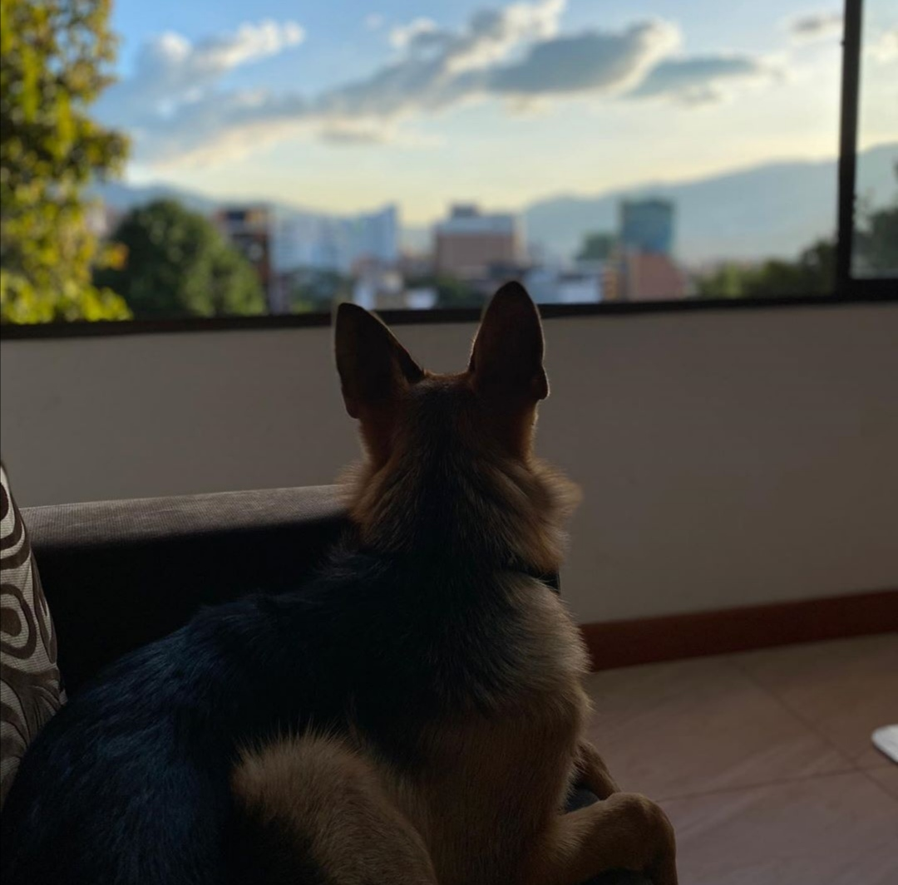

CV Perrito Faldero
Gurú de Faldas
Más de 10 meses de experiencia siendo faldero junior
Educación
- Profesional en Selección de Faldas,
- 2017-2018. Universidad Faldera del Distrito 11 Perruno.
- MBFA. Maestría en Busqueda de Faldas Alemanas,
- 2018-2019. Centro de Postgrados de Alemania.

Professional Experience
- IDENTIFICADOR DE BUENAS FALDAS,
- 2019-Current. Faldas ID Corp.
- ESCRITOR DEL ARTÍCULO SEMANAL "FALDAS LOVERS",
- 2018-Current. Magazine Perreo Intenso.
Other
- Puedo ladrar en Inglés, Español y Alemán.
- Tech Skills.
- Puedo comer croquetas con o sin salchichon cervecero.